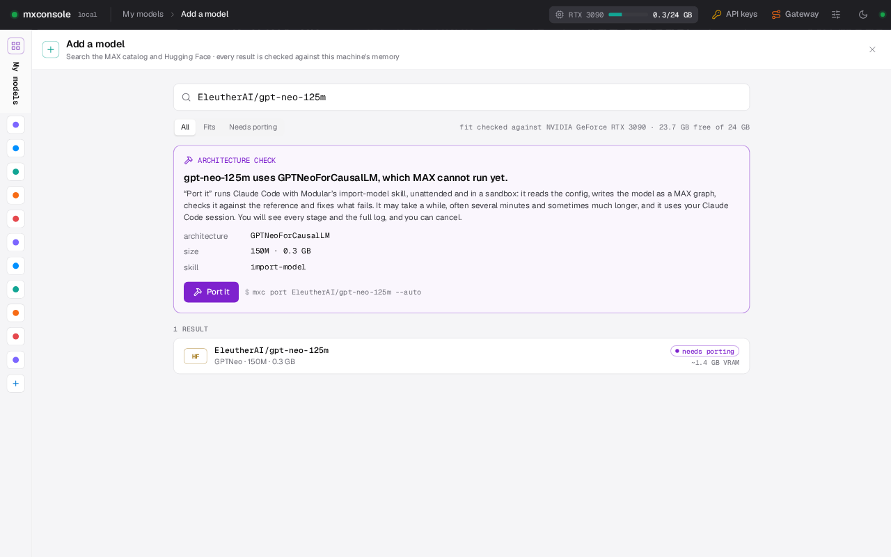

mxc port <hf-repo> --auto
Porting, behind the scenes
mxconsole runs any model whose architecture MAX already supports. For one it doesn't, mxc port <hf-repo> --auto (or Port it in the console's Add a model) has Claude Code write a small MAX package for that architecture in a sandbox, following Modular's own porting skill. mxconsole then compiles and serves the package itself, compares its output with the original Hugging Face model, and registers the model only if it matches. After that it works like any other model: same endpoint, keys, idle unload and notebook.
Why it's a separate step from pull
A pull downloads files: it's free and predictable, and it either works or tells you why. A port spends your Claude usage (about $2–5), takes 7–40 minutes, needs Claude Code and Linux with bubblewrap, and can fail after spending that. So mxconsole never starts one on its own. mxc pull reads config.json before downloading any weights; if MAX doesn't support the architecture it stops and points to mxc port. In the console, Add a model shows the model as "needs porting" with a Port it button.

The pipeline
Ten steps, from the job's start to a served model. Pick a step to see what runs it, what it checks and what you see. Pick an outcome and press Play to walk the path it takes and where it leaves.
Where things live
The model's config.json and model card are untrusted input (assume prompt injection), so the agent, the checks and the test server all run under bubblewrap with a scrubbed environment. mxconsole keeps its own records outside.
Inside the sandbox
What the agent can touch
- Writes: its workspace (
~/.mxc/ports/<model>/) and the job's privatework/folder. Nothing else. - Reads: the system, read-only. Your home folder and
~/.mxcare empty there (no~/.ssh, no database, no API keys, no other models). Bound back read-only: the Claude, pixi and git installs, Modular's skills, this model's weights, and for try-port mxconsole's own Python. - Runs: Read, Write, Edit, Glob, Grep; WebFetch on huggingface.co; the skill's own scripts through its pixi env; copying the donor's folders; the try-port command. Anything else would prompt, and prompts are denied. No
ls,cat,pip. - Environment: anything named like a key, token, secret, password or cookie is removed, plus
HF_TOKEN,MXC_API_KEYand agent sockets. Claude keeps only its own login. Private/tmp, own PID namespace. - Can't change its own rules:
.claude/settings.jsonin the workspace is bound read-only on top.
Outside, kept by mxconsole
What the harness keeps to itself
- The log, the transcripts and the copy of the best attempt, in the job folder
~/.mxc/ports/<job id>/. - Installing the skill's pixi env and downloading the weights: done once, outside, from the pristine clone. Inside they are read-only.
- The gate scripts. They are hashed after the clone is updated and checked before every gate; if touched, they are restored from git, and if that fails the job fails.
- Registering and serving. Only mxconsole writes the model database.
Accepted risks (documented in port_auto.py): the agent can read the Claude login and has network access, which bubblewrap can't prevent. And the checks import and run the generated code, so a pass means "an agent that did not cheat produced matching output"; the sandbox limits damage, it doesn't vouch for the port.
~/.mxc/skills/modular/read-only in every sandboxModular's skills, cloned from github.com/modular/skills and fast-forwarded each run. Two known bugs patched locally (modular/skills#15), and the env's MAX pinned to the one mxconsole serves with.ports/<model>/agent writesThe workspace. Named after the model, never all digits, so it can't collide with a job folder.config.json,PORT.mdThe model's config at the pinned revision; the donor, the lane, the scaffold command and the loop..claude/skills/read-onlyLinks to Modular's skills..claude/settings.jsonis read-only too.port/<slug>/The package:arch.pyand an__init__.pythat exposesARCHITECTURES. This folder is what gets registered and served.port/<slug>.last-attempt/Only when an earlier attempt got further and its package was put back.ports/<job id>/outside the sandboxThe job.port.logEverything the job did, readable: each stage, each command, the agent's steps, the test server's output.agent-<n>.jsonlThe agent's raw transcript for attempt n, whole tool results included. It can hold anything the agent printed; don't share it unreviewed.try-<n>.jsonread-only for the agenttry-port's settings for attempt n.best/A copy of the package from the attempt that got furthest.work/agent writesdeleted when the job endsPrivate caches (pixi, uv, Hugging Face, MAX compile), the agent's private Claude config, try-port's state. The model's weights are bound in read-only.
The tree starts at ~/.mxc, mxconsole's home (it moves if you configure another).
What can come back
| Outcome | When | What you get | What to do next |
|---|---|---|---|
| ported | mxconsole's own build check and comparison with Hugging Face pass. | The model in mxc ls with source port, at a pinned revision, started. Same endpoint, keys, idle unload and notebook as any other. CLI exits 0. |
Use it. Review the package code if that matters to you (it runs in normal serving). After a MAX upgrade it may need redoing. |
| parked | The config loads Python code from the Hub (auto_map for a model type transformers doesn't know). |
A message that says so, before anything is spent: no skills, no weights, no agent. The job is recorded as failed (CLI exits 1). | Nothing. mxconsole doesn't run remote code, so these stay parked (EXAONE is one). |
| failed | Attempts used up, the same failure twice in a row, or something another attempt can't fix (no Claude Code, Hugging Face down). | A message saying which attempt got furthest ("built but did not serve", "served; the comparison failed"), that attempt's package in the workspace, and the path to the full log. If Hugging Face was unreachable or rate-limiting, it says so and doesn't blame the port. CLI exits 1. | Read port.log. If it was Hugging Face, run it again later. Otherwise the workspace is still there to continue by hand (guided mode, below). Some walls are MAX's: BLOOM's ALiBi fails this way. |
You can also cancel at any time: Ctrl-C in the CLI (exit 130) or Cancel in the console. The agent and its commands are stopped; the workspace is kept.
Cost and time
per model in our tests, on your Claude account.
mostly downloading weights and compiling (a cold MAX compile is 5–25 min).
3 attempts by default (--max-attempts, 1–10), each with up to 4 try-port runs.
Measured runs from the port study (Linux, 2× RTX 3090, MAX 26.7, Claude Code). The first nine clean runs, mostly before the harness fixes, cost $36.43 in total.
| Model | Result | Attempts | Time | Cost |
|---|---|---|---|---|
| SmolLM3-3B | ported | 1 | 7 min | $1.51 |
| GPT-2 | ported | 1 | 13 min | $3.85 |
| Pythia 1.4B | ported | 1 | 17.5 min | $2.98 |
| Phi-2 | ported | 1 | 17.7 min | $3.29 |
| Granite MoE 1B (with try-port) | ported | 1 (3 tries) | agent 10.1 min | $2.30 |
| StarCoder2-3B (12 GB download) | ported | 2 | 40 min | $4.86 |
| StableLM 2 1.6B | correct; stopped on a checker bug, registered after the fix | 2 | – | $4.68 |
| BLOOMZ-560m (ALiBi) | failed | 3 | 24 min | – |
| EXAONE 3.5 (remote code) | failed then; parked now, before spending | 3 | 18 min | $3.75 then, $0 now |
Proven, ported and serving: GPT-2, Pythia, Phi-2, StarCoder2, StableLM 2, SmolLM3, Granite MoE, OLMoE.
What you need
- Claude Code, installed and signed in (
claudeon the PATH, orMXC_CLAUDE=/path/to/claude). - Linux with bubblewrap (
bwrap). Elsewhere only with--unsandboxed, which isn't recommended: the agent then runs with your permissions and gets no try-port. The console doesn't offer Port it without a sandbox; it shows the terminal command instead.
Limits
- Text LLMs only so far. Vision and embedding architectures haven't been tried.
- Safetensors weights only. Repos with only
.binor GGUF files are refused. - It must fit one GPU at the precision the weights are stored in.
- A port is tied to a MAX version. It's built against the MAX mxconsole serves with; after a MAX upgrade it may need redoing.
- Ported code runs inside mxconsole's serving. It's sandboxed while it's written and checked, not when it serves. Review it if that matters to you.
- The checks compare with the original model (first-token score and top token at several prefix lengths). They don't evaluate quality on your workload.
Guided mode: mxc port <repo> without --auto
Without --auto, mxconsole only sets things up and hands you the command. It updates Modular's skills, makes the same workspace (config.json, a PORT.md naming the donor, the scaffold command and the loop, and the skills linked under .claude/skills), and prints:
Modular skills: … Closest supported donor: <Donor> Workspace: ~/.mxc/ports/<model> (config.json, PORT.md, .claude/skills) Start the port with: cd ~/.mxc/ports/<model> && claude '/import-model <repo>' When it works: mxc pull <repo> --port <port dir>
You run Claude Code yourself, interactively, with no sandbox, park check or attempt loop. mxc pull <repo> --port <port dir> registers the result: it checks the folder (a valid Python name, arch.py, an __init__.py with ARCHITECTURES) and downloads the weights at a pinned revision. It doesn't run the comparison with Hugging Face, so test the port before you rely on it.
Source: docs/PORTING.md on GitHub · code in mxconsole/port_auto.py, port.py, port_try.py, port_sandbox.py, admin_port.py.